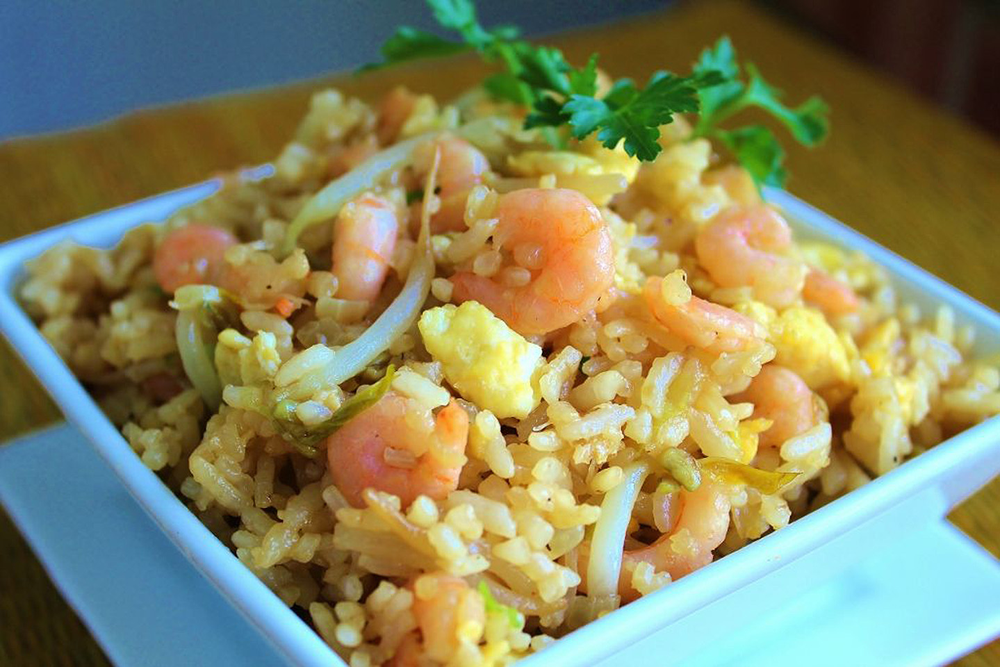

Shrimp Fried Rice Recipe

Description
Shrimp Fried Rice is one of my favorite food.
Ingredients
- 1 ½ cups uncooked white rice
- 3 cups water
- 4 tablespoons vegetable oil
- 1 cup fresh bean sprouts
- ½ cup chopped onion
- 1 ½ cups cooked medium shrimp, peeled and deveined without tail
- ¼ cup chopped green onion
- 2 eggs, beaten
- 1 teaspoon salt
- ¼ teaspoon ground black pepper
- 4 tablespoons soy sauce
- ¼ teaspoon sesame oil
Directions
-
In a saucepan bring water to a boil. Add rice and stir. Reduce heat, cover and simmer for 20
minutes. Set aside and allow rice to cool.
-
Heat a large skillet or wok for 2 minutes. When the skillet or wok is hot, pour in vegetable
oil, bean sprouts and onions. Mix well and cook for 3 minutes.
- Mix in cooled rice and shrimp and cook for another 3 minutes. Stirring constantly.
-
Mix in green onions, eggs, salt, pepper, soy sauce and sesame oil. Cook for another 4
minutes, stirring continuously, until eggs are cooked and everything is blended evenly.